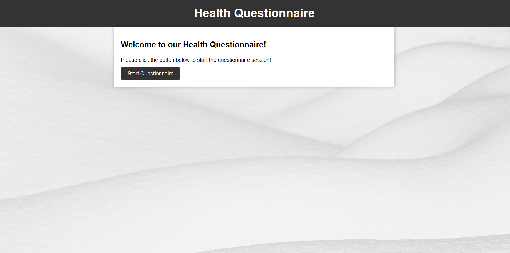
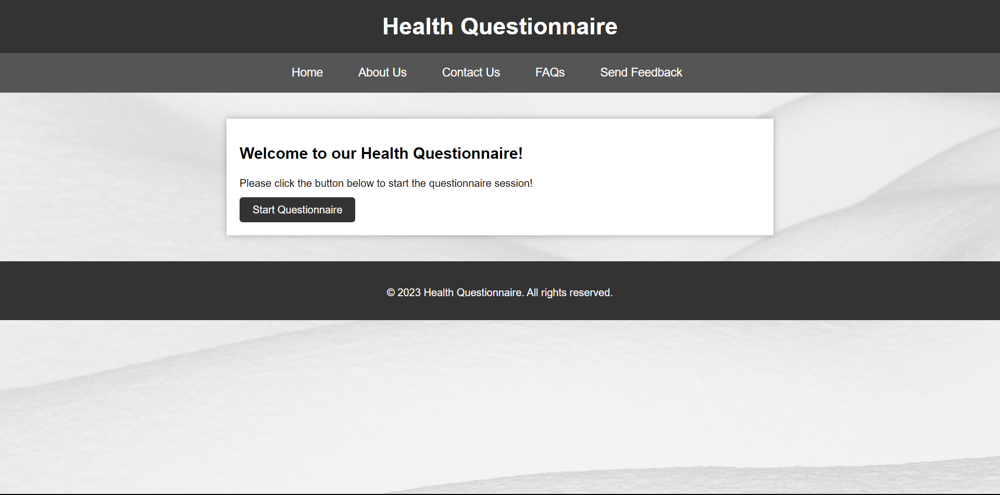
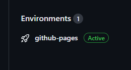

Welcome to 2022-2023 ISP Journals Page!
My ISP Journal (2022-2023)
ISP Journal
17-April-2023: Plans, Achievements, and Challenges
Personal Plans:
I will change the design of the website much cleaner and much more readable than before. Also, I will optimize the code.
I will add a navigation bar to the top of the main page, including Home, About Us, Contact Us, FAQs, and Send Feedback to make our webpage easier for customers to use.
Significant Achievements:

This is the main page designed by modifying the code of other members of the team. It's the same as putting a picture in the background, but I've organized the color and size of the text more neatly for better readability. The button has also been changed to a prettier button with a black color rather than a normal button.

This is also the main page, but I have been added a navigation bar to the main page that was modified earlier so that customers can use this website more easily by using Home, About Us, Contact Us, FAQs, and Send Feedback. Also I have been added a copyright notice at the bottom of the page for copyright protection. I widened the spacing between the navigation bar and the middle box as it appeared too cramped.
Technical Challenges
This week, I had a technical challenge with the refreshing website because I was doing a lot of code commits very often. After modifying the code, I have to go through the process of checking how it was modified, but on Github, this process takes too long time, so I have been testing the code using my Digital Portfolio on CoderMerlin. But when I committed the image or css file, no matter how many times I refreshed the site, it didn't change. After searching, I overcame this challenge by going to Google settings and clearing the cache.
Scheduling Challenges
I have the US History STAAR EOC next week, and the AP Exam and SAT the next week, so I was very busy preparing for those tests. So I wanted to add all the functions of the navigation bar that I planned in advance, but I couldn't even link it and just added the bar. I will overcome this next week by properly distributing our time to get more work done.
Interpersonal Challenges
In my team, I don't think there are any interpersonal challenges because everyone is doing their own work and working really hard on this project. I hope to complete this project within that deadline.
The Top of the Page
10-April-2023: Challenges and Achievements
Technical Challenges
This week we continued to design our hompage. We tried to make the website look much better and wrote more questions on the next page. Also, one of the team members managed to implement a checkbox next to the question and labeled them like these: "Nope", "Rarely", "Sometimes", and "Often". I didn't do much work because I had to work at another school, but I don't think there were any technical challenges except Javascript.
Scheduling Challenges
This weeks scheduling challenges came from my school work. I had a great deal of tests this week which came with a large homework load as I needed to study for these tests. Furthermore, this week I had to complete the M2514 mission perfectly, so I didn't have as much ISP work as the rest of the team. M2514 uses L-System to create patterns with turtle in CoderMerlin IGIS with using exact same way to M2513 mission. I had to add a Fractal Tree as one of the L-System in my cycle, a Fractal Plant as one of the L-System in my cycle, and "Kevs Wispy Tree" as one of the L-System in my cycle. I've been busy, and lazy on the ISP. I will overcome this challenge by managing my time more effectively and makeup process for lost time.
Interpersonal Challenges
We didn't have interpersonal Challenges because our team is working much harder than me, but I feel very sorry for my team members because I didn't do much work this week. I hope I can do more next week.
Significant Achievement
Our Website
The Top of the Page
3-April-2023: Challenges and Achievements
Technical Challenges
This week, we continued to design our homepage. We tried to make the website look better and wrote more questions on the next page. We had to know the html with Javascript much more and study about them. Our technical challenge is Javascript for now on.
Scheduling Challenges
This week's scheduling challenges came from my school work again. I had so many quizzes and tests this week and lots of homework. So I didn't have as much ISP work as the rest of the team. I will overcome this challenge by doing much more work this weekend or next week.
Interpersonal Challenges
As I said earlier, I feel very sorry for my team members because I didn't do much work this week. I'm not currently committed to the ISP Project. I hope I can do more next week.
Significant Achievement
Our Website
The Top of the Page
27-March-2023: Challenges and Achievements
Technical Challenges
This week we designed our homepage. We filled the entire website with a gray-colored picture, and wrote a couple of questions on the next page. Also, one of the team members managed to implement a checkbox next to the question. I didn't do much work because I had to work at another school, but I don't think there were any technical challenges.
Scheduling Challenges
This weeks scheduling challenges came from my school work. I had a great deal of tests this week which came with a large homework load as I needed to study for thest tests. Furthermore, this week I had to complete the M2513 mission perfectly, so I didn't have as much ISP work as the rest of the team. M2513 uses L-System to create patterns with turtles in CoderMerlin IGIS. I had to finish this mission by Friday, so I guess I haven't been able to do much because I've been busy. We will overcome this challenge with more communication and makeup process for lost time.
Interpersonal Challenges
So far, everyone on the team has been working hard and there have been no problems with interpersonal relationships while working. I don't know exactly when the deadline is, but I look forward to getting it done as soon as possible.
Significant Achievement
Our Website
The Top of the Page
20-March-2023: Challenges and Achievements
Technical Challenges
We didn't face any technical challenges. We have to think about the layout of the website. So I decided to make the google slide shared with team members and put everything that we think into it. The reason why I made this is to make website and write the code much easier. So we are going to start to make the website using this google slide.
Scheduling Challenges
I think we progressed quite a bit this week. Last two weeks, I honestly thought our team was falling behind the others. However, after reviewing our progress this week, I realized that wasn't the case. We had in-depth discussions about the structure of the website. While we considered using website templates that appeared on Googld search, we decided to write our own code because we didn't think the results would match our vision.
Interpersonal Challenges
We didn't have interpersonal challenges because we completed all the tasks assigned to us and we are proceeding very good. Our team seems to continue to get along well and work well together as we progress through our project.
Significant Achievement
Website Layout Google Slide
The Top of the Page
13-March-2023: Challenges and Achievements
Technical Challenges
We didn't face any technical challenges. We finally figured out why the website was not working and how to solve this problem. It's just a simple problem. The error message was "No such file or directory @ dir_chdir - /github/workspace/docs". We had to focus the path, /github/workspace/docs. We made the directory named docs and put the html file and css file into that directory. And... that finally worked! So we didn't have any technical challenges this week, and we're going to make the website!
Scheduling Challenges
We had a little scheduling challenges. I was absent on Wednesday, and one team member was absent on Friday, so we couldn't communicate very well. We can overcome this by communicating through text what we did on that day.
Interpersonal Challenges
There were absolutely no interpersonal challenges this week. I think that everyone is doing their job diligently and everything is fine except we haven't done much ISP work. We will diligently work with ISP, collaborate with other colleagues, and work efficiently
Significant Achievement
Github Repository

The Top of the Page
27-February-2023: Challenges
Technical Challenges
We saw the error message like "Conversion error: Jekll::Converters:Scss encountered an error while converting 'assets/css/style.scss'; No such file or directory @ dir_chdir - /github/workspace/docs" last week, but we still don't get this. Because there was no time to ask Mr.Ben-Yaakov due to the SAT Day, Early Release Day, Spring Break, etc. So we have to ask Mr.Ben-Yaakov about this as soon as possible.
Scheduling Challenges
I think our team is currently facing serious scheduling challenges. Because this week was as short as last week because of the SAT Day, Early Release Day, Spring Break, etc, we can't work together, we haven't been able to set up our website for weeks, and I can't get anything done, so we're falling behind the other teams. We will solve this problem through ongoing communication with our team members going forward.
Interpersonal Challenges
Right now, our team is facing technical challenges and scheduling challenges, but we don't see interpersonal challenges in comparison. We each communicate well, and I think there are no problems in human relationships.
The Top of the Page
20-February-2023: Challenges
Technical Challenges
We faced the technical challenges when we tried to setup the website using github.io. We figured out why we couldn't setting in github repository ourselves. We had no permission to access the settings of the repository. So we asked Mr.Ben-Yaakov if he could create a Github Page for us. So he did something for us and it made a difference on Github. But we could see the error message like "Conversion error: Jekll::Converters:Scss encountered an error while converting 'assets/css/style.scss'; No such file or directory @ dir_chdir - /github/workspace/docs". We can overcome this challenge by communicating with team members or teacher, researching, etc.
Scheduling Challenges
I think our team is currently facing serious scheduling challenges. Because this week was very short because of the President's Day and student holiday, we can't work together, we haven't been able to set up our website for weeks, and I can't get anything done, so we're falling behind the other teams. We will solve this problem through ongoing communication with our team members going forward.
Interpersonal Challenges
Right now, our team is facing technical challenges and scheduling challenges, but we don't see any interpersonal challenges in comparison. We each communicate well, and I think there are no problems in human relationships.
The Top of the Page
13-February-2023: Challenges
Technical Challenges
I'm proud to say that I did the most work this week on my ISP project so far. As much as we did the most, we also faced many technical challenges. We thought and studied how to set up the website, but couldn't find any solution. There are two ways: using github.io and using VaporShell. Of these, VaporShell is expected to be very difficult to do as it is so complex so unfamiliar to use. Therefore, we are looking into using github.io, which we have become accustomed to while creating our Digital Portfolio.
Scheduling Challenges
Again, we have done quite a bit of ISP work this week. So I don't think we faced any scheduling issues. This week we had the ISP MVP Presentation. I had to make a google slide for the presenting, but I think that each of us made a slide that fits our own part very well, and the presentation was successful compared to what I was worried about. The Lindenmayer System, which was difficult to understand last week, was perfectly understood through the Merlin Mission M2512-10, and the mission was successfully completed. In the future, we plan to setup the website, and then write html and css code.
Interpersonal Challenges
We had no interpersonal challenges this week. Everyone on the team worked hard and successfully completed the ISP MVP Presentation and Merlin Mission. We expect to work with the team on more ISP work in the future, further improving interpersonal relationships.
The Top of the Page
6-February-2023: Challenges
Technical Challenges
We haven't done much work on the ISP project this week, focusing on the W2511 Lindenmayer Systems. Lindenmayer Systems (also known as an "L-System") is a formal grammar and rewriting system. Doing this assignment in detail and effectively requires a lot of research and collaboration with other team members.
Scheduling Challenges
We believe the scheduling challenge we faced was that we didn't do much of the ISP project's work to study the W2511 Lindenmayer System. I don't have enough time to do anything specific about ISPs, so when I do research, I think researching the information ISP jobs require is a way to overcome scheduling challenges.
Interpersonal Challenges
There were absolutely no interpersonal challenges this week. I think that everyone is doing their job diligently and everything is fine except we haven't done much ISP work. We will diligently work with ISP, collaborate with other colleagues, and work efficiently.
The Top of the Page
30-January-2023: Challenges
Technical Challenges
I think there was no technical challenges that we faced since we haven't worked project technically. In the future, we're expecting that we will face many technical challenges in creating a website and implementing the counseling chat function directly. We will overcome this with a lot of research and teamwork with teammates.
Scheduling Challenges
We faced pretty extreme scheduling challenges this week. Because the school was cancelled because of the bad weather condition, so we had only one class this week. This limited our work time and communication with teammates. We can overcome this by working a lot next week and calling with teammates outside of school.
Interpersonal Challenges
I think there were no interpersonal challenges because we completed all the tasks assigned to us and we are proceeding very good without any interpersonal challenges. I think in the future we will be able to work on the project more efficiently by working more.
The Top of the Page
23-January-2023: Challenges
Technical Challenges
I really don't think that we faced technical challenges this week since we didn't have much time to work on the isp. I'm expecting to face many technical issues such as chat function with customer and website while working on the isp. We can overcome these challenges by working and communicating with our engineers.
Scheduling Challenges
We haven't had much time to work on the isp because we had a quiz this week, so we're focusing about mysql. We will overcome this challenge by working harder onext week on what we missed this week.
Interpersonal Challenges
I don't think we had interpersonal challenges because the role is already well done before, and I think it's okay in interpersonal relationships. While we had no difficulties while collaborating, I'm a bit concerned that there seems to be a lack of communication about what we are working on. I think we can overcome this through much better communication, constant update notices, etc.
The Top of the Page
16-January-2023: Challenges
Technical Challenges
I don't think we faced technical challenges this week as we didn't have much time to work on the project. I'm expecting to face many technical issues such as chat function with customer and website while working on the project. We can overcome these challenges by working with our engineers.
Scheduling Challenges
We have not had much time to work on this project because we have a quiz next week, so we're learning about mysql. We will overcome this challenge by working more next week on what we missed this week.
Interpersonal Challenges
I don't think we had interpersonal challenges because the role is well done, and I think it's okay in interpersonal relationships. While we had no difficulties while collaborating, I'm a bit concerned that there seems to be a lack of communication about what we are working on. I think we can overcome this through better communication, constant update notices, etc.
The Top of the Page
9-January-2023: Challenges
Technical Challenges
The technical challenge we faced this week was with Github. All of our team members had no experience with Github yet, so there were a lot of commands we didn't know. We didn't know anything about how to collaborate with team members to upload and record an issue. However, by asking Mrs.Ben, googling, searching, and trial and error, finally we know how Github is structured and how to use it. We have learned many git commands such as git pull, git clone, git config, git add, git commit, git branch, git remote, and git push.
Scheduling Challenges
Our team has not yet faced any scheduling challenges so far. I don't know what will happen in the future, but communication with the team members is going better than I think, and we haven't lacked anything yet. However, if we start coding in the future and start the project properly, it is expected that we will face many problems. I think communication should be good to prevent that.
Interpersonal Challenges
Our team didn't have many challenges this week with interpersonal challenges because we haven't had many assignments yet and we haven't started coding the project. In fact, there were very few minor challenges when it came to deciding the roles of the team members. One member tried to do both Project Manager and Product Manager, but realized he couldn't do both, so he switched roles with me. I think these challenges were overcome through good communication and compromise.
The Top of the Page
2-January-2023: Initial Roles
(Software) Development Engineer
Software Development Engineer is the most important role withing the team. This is a person who applies the principles of software engineering to design, develop, maintain, test, and evaluate computer software. This creates computer programs and solve technical problems using their creativity, analytical thing and problem-solving skills. I don't have a lot of coding knowledge, but I think I would be suitable for this role where I have a little bit of myself rather than other roles.
QA Engineer
Quality Assurance (QA) Engineer ensures that the software passes all checks before its release to the public. This monitors every phase of the software development process, including design, development, testing, debugging, and delivery. I think this role should be done with Software Development Engineer. Because I think we can fix errors only when you know how the code is structred as a whole. I feel confident in this role because I have fixed numerous errors.
Project Manager
A project manager is a professional in the field or project management. Project managers have the responsibility of the planning, managing team, etc. They have to plan and develop the project idea. I would not be suitable for this role because I'm not good at English, so the communication with team members is very hard for me. Also, I'm not creative I think.
Product Manager
A product manager is a professional role that is responsible for the development of products for an organization. A product manager's job is planning and executing the product's lifecycle. This role must work closely with the other roles so that marketing, sales, etc. This has to communicate very well with your team members in order to successfully produce a product and is almost like a leader of team. I would not be suitable for this role because I'm not good at English, so the communication with team members is very hard for me.
Release Engineer
Release engineer doesn't typically code new features or solve bugs, but this role concerns with the configuration, packaging and delivery of software. A release engineer is an individual who is concerned with the mechanics of the development and processing of software products. I might be suitable for this role because I find it not difficult to manage and document files.
The Top of the Page